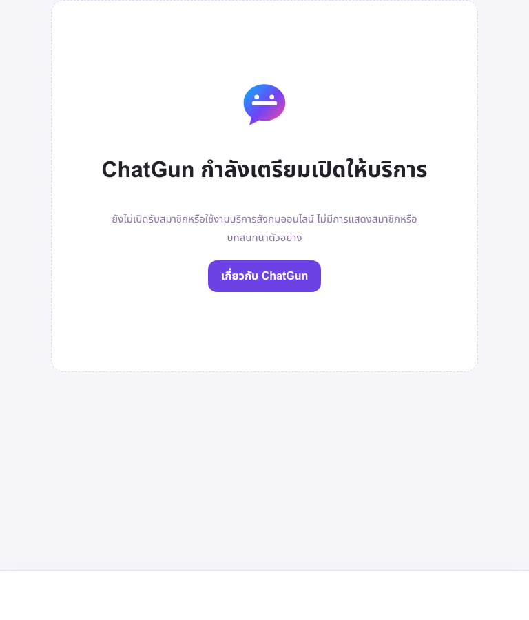
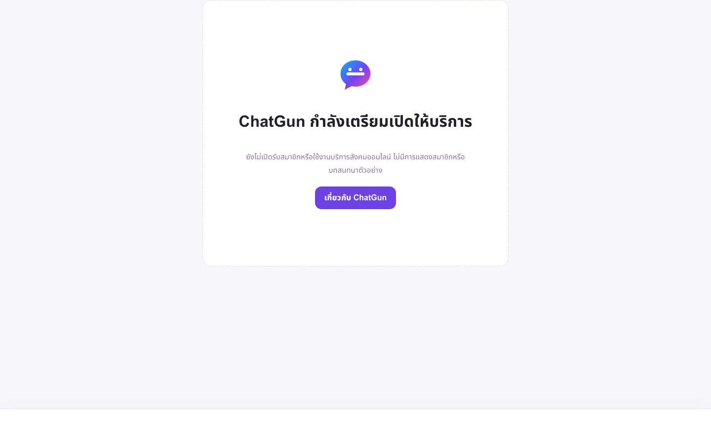

ChatGun Final UAT execution report
PARTIAL UAT — SPECIFIC EXTERNAL GATES REMAIN
Generated 28 October 2026, Asia/Bangkok. This report distinguishes completed technical verification from genuine human testing. No invitation, UAT account, role grant, feature activation, production deployment, merge, or destructive database action was performed.
Release identity
| Item | Verified result |
|---|---|
| PR #17 | Draft, mergeable; HEAD 9c8689566b78f87952e38d7be3504b5a9e419451 |
| Latest baseline CI | SUCCESS — run 40110238957 on exact PR HEAD |
| Tested UAT application | 4a7dee32c52bc474ee3cc50d13e293e66e771c1a |
| Current Production | a73ff21c615dabb6a0c19c0a22685c2370958ca1; unchanged |
| UAT origin | uat.chatgun-final-uat.pages.dev |
Execution totals
Local regression: 248 pass, 0 fail, 0 skip. Live closed-host negative security: 17 pass. Closed-state responsive checks: 3 pass. See machine-readable results and defect register.
Authentication and Admin
| Journey | Result | Evidence boundary |
|---|---|---|
| CONFIGURED / genuine OAuth NOT RUN | Dedicated encrypted credentials and exact callback; closed initiation/callback negative tests pass. | |
| CONFIGURED / genuine OAuth NOT RUN | Dedicated encrypted credentials and exact callback; minimal-scope/token validation regressions pass. | |
| LINE | CONFIGURED / genuine OAuth NOT RUN | Dedicated encrypted credentials and exact callback; nonce/PKCE/token regressions pass. |
| Turnstile | CONFIGURED / human challenge NOT RUN | Dedicated hostname/site key; invalid token and hostname/action enforcement pass. |
| Owner authenticator enrollment | PASS | One owner TOTP device recorded; no secret/OTP collected. |
| Protected UAT Access MFA | NOT RUN | Dedicated app c2c866d3-3d41-410b-909f-4beac2683a17, 10-minute session, anonymous redirects pass. Human TOTP/fresh-auth not yet proved. |
| Owner role | NOT EXECUTED | No genuine UAT UUID, no role grant, and no email-derived authorization. |
Environment and isolation
- D1
e3cb426c-b88a-4b93-90fd-39df524f68ae: schema 21, FK0, zero users/identities/sessions/invitations/grants/media. - R2
chatgun-final-uat-media: private, r2.dev off, zero custom domains. - Privacy and media cleanup Workers retain exact UAT bindings and private endpoints. First scheduled run is NOT RUN; manual scoped cleanup evidence passes.
- Google/Facebook/LINE/Turnstile/Access metadata are dedicated Preview configuration. Production credentials were not reused.
- Production isolation rechecked read-only; Production SHA, existing owner data and protected staging counts remain unchanged.
Social, media, privacy and lifecycle
BLOCKED / NOT RUN with genuine participants.
Discovery, location/distance privacy, direct chat, read state, presence, blocking/reporting, public/private Gallery, quarantine/moderation, ratings/reviews, session revocation and disposable-account deletion have implementation and synthetic coverage, but no real-human PASS is claimed. Participant B and expanded Social/location/media approval are absent. Real media must remain off without an eligible independent appeal reviewer and active 19:00–22:00 Asia/Bangkok coverage.
Responsive evidence
Current live closed-state viewport emulation passed without script errors or horizontal overflow. These are not physical-device results.



Physical iPhone and Android browser testing: NOT RUN.
Approval package and staged activation
The exact proposed expanded-UAT versions, operational decisions, staged UAT flags, restricted Production proposal, backup/migration gates and rollback procedure are in production-release-readiness.md. They are proposals only; current owner-only LINE policy approval does not authorize expanded Social/media UAT.
Remaining consolidated human handoff
- Privately confirm authorized Participant A and a distinct consenting eligible adult Participant B, including provider eligibility, media scope and disposable-account deletion consent.
- Approve or reject the exact expanded-UAT policy/operating package and select one window within 19:00–22:00 Asia/Bangkok.
- Name an eligible independent media-appeal reviewer or keep Media off and BLOCKED.
- During the one campaign, personally complete OAuth, Turnstile, provider consent and protected Access TOTP. No authenticator re-enrollment is needed.
- Only after the genuine owner UAT UUID is shown privately, explicitly approve the exact maximum-eight-hour
report_reviewer+safety_admingrant.
Release decision
NO Production GO. Technical preparation is strong and no P0/P1 engineering defect is open, but genuine OAuth/MFA/Turnstile, two-person Social/media/lifecycle UAT, operational approval, Production backup/schema gates and exact-release CI remain required. Production and PR #17 remain unchanged.